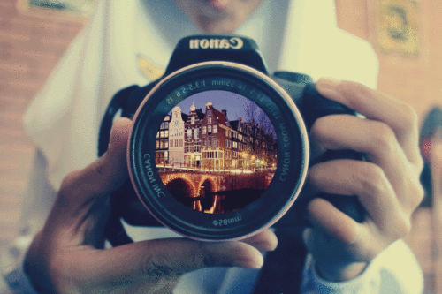

Unordered List
Ordered List
Color Codes
Video Tags
Table Tags
Como fotografar
Fotografia para iniciantes
Dicas
Unordered List
Ordered List
Color Codes
Video Tags
Table Tags
Fotografias da natureza
Chapim-de-poupa a comer num dos bosques de pinheiros na cidade de Madrid.
Corvo na serra
Floresta de Faias de Montejo de la Sierra
Fotografia
Aqui pode aprender mais sobre fotografia!
Temas que irá encontrar aqui
Os primeiros seis elementos da composição são diferentes tipos de objetos que você pode encontrar em uma foto, variando do simples ao mais complexo. Cada objeto na fotografia exibe essas características em um certo grau, por vezes de uma forma óbvia e simples, e em outras vezes mais escondido.
Pontos
Linhas
Formas
Texturas
Cor
Tons - Tonalidades
Distância
Equilíbrio
Espaço
Padrões
Escolhas na hora da compra
A máquina fotográfica é importante
Marca
Objectivas
Aprenda connosco
Aqui irá encontrar dicas de como captar aquele momento...

Máquina fotográfica
Marcas mais populares existentes no mercado
Objectivas
Canon
4.5 mm
10 mm
20 mm
50 mm
Fujifilm
75 mm
100 mm
300 mm
Nikon
500 mm
700 mm